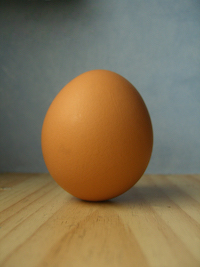

CloudCannonは、WebデザイナーとWeb開発者が、顧客や技術に詳しくないチームメンバーに、静的サイトを管理、編集することを、簡単にします。
このチュートリアルサイトでは、CloudCannonの基礎をお伝えします。
あなたは、このチュートリアルを「生きた、編集できる静的サイト」と「既存のWebサイトを編集できるスキル」とともに終えるでしょう。
学べること:
- サイトコンテンツをCloudCannonで編集すること（あなたのお客さんも）
- あなたのソースコードに、編集可能なコンテンツを定義する方法、そして
- CloudCannonでホスティング設定をすること
CloudCannonで作ったサイトにファイルをアップロードする方法はすでに知っていますね ;)
では、はじめましょう！
1. 編集
「編集」は、CloudCannonを使う上で中心となるものです。
私は編集できるテキストです
では、CloudCannonのビジュアルエディタを開きましょう（右上の鉛筆マークです）。これはゆくゆくはあなたのクライアントも編集に使う画面です。
コンテンツのまわりの黄色い箱は、編集できるということユーザーに示しています。
もっともシンプルな編集がテキストです:
ここをクリックして、書き換えてください。
画像も簡単に変更できます。
---.jpg)
右にある画像は、編集できます。
ビジュアルエディタでは、画像のズームやクロップ（切り取り）、他の画像と置き換えることもできます。.
メモ：ビジュアルエディタでは、画像サイズやポジションの変更はされません。これは、技術に詳しくないユーザーが、サイトデザインを崩してしまわないようにするためです。
では、ズームとクロップ（切り取り）を練習してみましょう。
- 雲の写真をクリックして、画像編集メニューを出します。
- "Alter cloud_400x240.jpg"（Alterは変更するという意味です）を選んでください。選ぶと、ズームとクロップをするためのインターフェースが表示されます。
- 画像のズームは、右下の角をドラッグするとできます。
- もとの画像サイズと同じままに、好きな場所へ画像をドラッグして移動することができます。
- チェックボタンをクリックして、変更を反映します。
いいですね。画像を変更することができました。
では、新しい画像に置き換えてみましょう。以下のようにして画像を置き換えることができます:
- 新しい画像をアップロードする。
- すでにアップロードした画像の中から選ぶ、もしくは
- 外部URLから画像を読み込む。
雲（Cloud）の画像から大砲（Cannon）の画像に変更してみましょう。
- "Use an image from {あなたのサイト名}" を画像編集メニューから選びます。
- "cannon_400x240.jpg" という名前の画像を探し、選びます。
- 画像の大きさは同じですので、今回はクロップせずに、完了させます。
今度は、「雲と大砲」の画像で置き換えてみましょう。
- 次のURLをコピーしてください: http://upload.wikimedia.org/wikipedia/commons/0/0f/Cloud2_(5966977597).jpg
- 画像編集メニューを開いて、"Use an image from another website." を選択します。
- 入力欄にさきほどコピーしたURLを貼り付けます。
- この画像は少しだけ大きさが違うので、位置をクロップして調整し、完了します。
他にもたくさんの編可能な要素（headersやspan, lists, divなど）があります。また、繰り返し可能なエリア（repeatables）も設定できます。ですが、ここでは基礎だけにとどめておきます。
2. 編集を追加する
下のテキストは、「編集されたがって」います。でも今はできません。黄色い箱がありません。それはつまり、class="editable"が無いということです。
私は編集して欲しいテキストです！
コードエディタに切り替え（右上にある、2つの山括弧アイコン）、HTMLファイルの81行目にあるコメントを読んでください。編集されたがっているテキストに、class="editable"を追加する方法について教えてくれるでしょう。
class="editable" 正しくを追加できたら、テキスト、画像を編集できるようになります。
このテキストを他のものに変更してください。
画像も変更してください。置き換える画像は以下をおすすめします。
http://upload.wikimedia.org/wikipedia/commons/2/27/Chicken_free_range_1.jpg
ファイルを編集するために、コードエディタを使う必要はありません。ローカルの好きなエディタで編集し、GitHub, Dropbox, FTPを使って同期することができます。
3. 保存
保存をすることなく、ビジュアルエディタとコードエディタを行き来していたことに気づいていましたか？すごいでしょ？
エディタを離れる前には、保持されていた変更を保存する必要があります。
保存はシンプルで、右上のフロッピーのアイコンをクリックするだけです。これでファイルがきちんと保存され、さらに、サイトを同期している場所にアップロードされます。
4. ホスティング
今はこのサイトは、CloudCannonでホスティングされており、インターネット上で閲覧することができます。いつそんな設定が済んでいたの！？って信じられないくらい、超簡単でしょう？
CloudCannonで作ったすべてのサイトは、無料のテストドメインとホスティングがついています。
左上のサイト名の横に、このサイトのURLが表示されています。
URLをクリックしてこのサイトにアクセスすると（パスワード設定が必要なら済ませてください）、その後、新しいタブで開かれたこのサイトから、戻ってきてください。
無料プランのサイトには、強制的にパスワードが必要です。サイトを閲覧するにはパスワードを設定してください。
5. やってみよう
おかえりなさい。
もう慣れたんじゃないですか？
でも、サイトプレビューでは編集可能なエリアはどれもクリックできなかったでしょう？
サイトプレビューを新しいタブで開いたまま、CloudCannonのビジュアルエディターに戻りましょう。
編集可能なエリアで変更を加えてみましょう。
保存します。
左上の青いアイコンが、緑になるのを待ちます。
サイトプレビューのタブを更新します。
変更をチェックすると...
イェーーイ！CloudCannonマジックです。
6. 自由な小鳥のように羽ばたこう
これでCloudCannonのチュートリアルは終わりです。
あなたのウェブサイトをシンプルに編集できるスキルを、あなたは身につけました。
おめでとうございます。
まだ触れていない重要な機能として、クライアント/技術に詳しくないユーザーとの共有、独自ドメインの追加などがあります。これらは、左側メニューの "Website Settings" （歯車のアイコンです）から簡単にできます。どちらもCloudCannonの有料プランです。
ドキュメントでは、リダイレクトの設定や、ファイルのインクルード、フォームなどの、開発者にとって大変なタスクについても解説しています。
もし、ブログや、もう少し複雑なウェブサイトを作るつもりなら、Jekyll betaの情報もチェックしてみてください。
自由にこのチュートリアルサイトは削除していただき（Website Settingsのメニュー内にあります）、あなたの新しいサイトをアップロードしてください。
最後に、もし助けの手が必要なら、いつでも、どんな時でもsupport@cloudcannon.comに連絡できます。お話できることを楽しみにしています。
Cheers,
Mike, George, Sam, Tim & Ross
The CloudCannon team